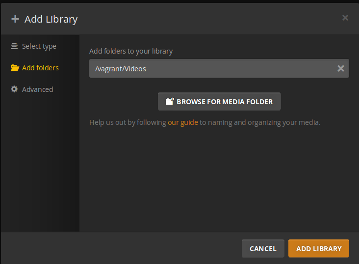
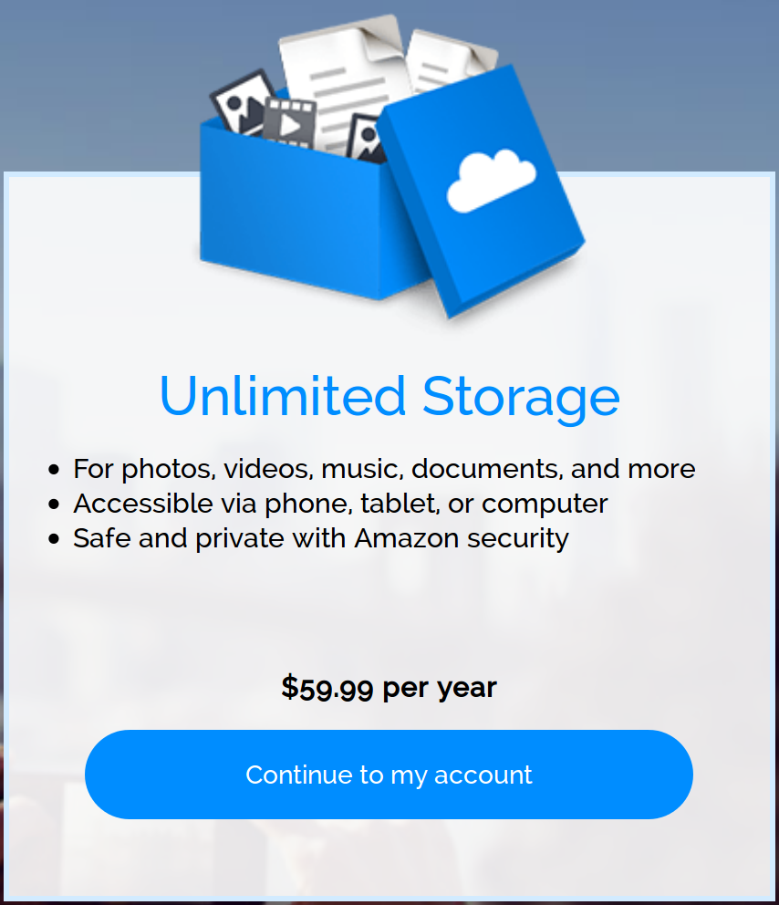
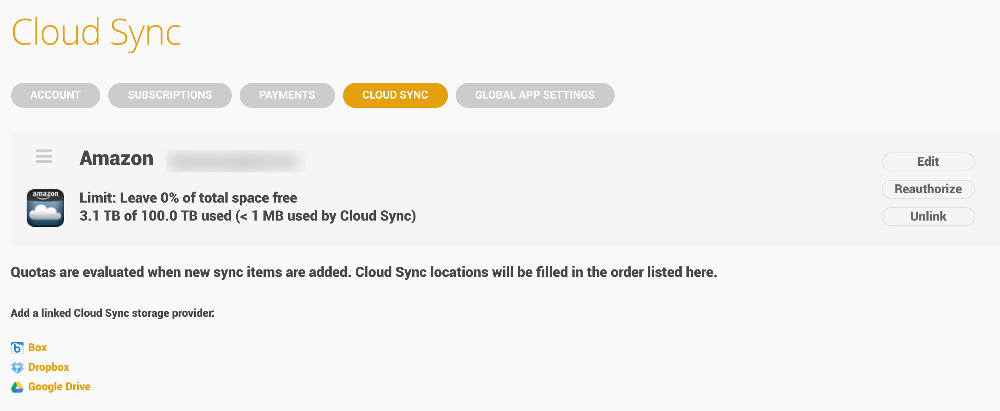
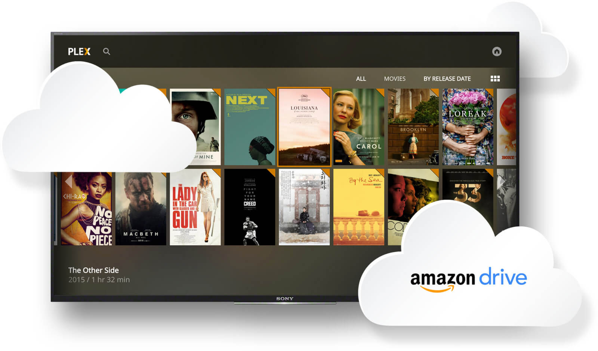

Running a Headless Plex Media Server
(...or learning the Linux command line the hard way)
Presented by
Zackary Lowery
at Leading Edje on
October 6th, 2016
What is Plex?
Plex is a media server you can use to stream music, photos, and video to any device on your network or the Internet.
Why?
- Private Netflix server and Internet radio
- You don't know what it is? Plex does.
What You Will Need
- An old or cheap computer - even a $35 Raspberry Pi will do!
-
 Linux install media - this tutorial uses the Ubuntu
distribution
Linux install media - this tutorial uses the Ubuntu
distribution
- An Internet connection
Post Ubuntu/Linux Installation
Install SSH
Let's install SSH to send commands to our server!
apt install openssh-serverGoing Headless
The server can now be detached from a monitor and all input devices.
As long as it's connected to a network, we're good to go!
Install an SSH Client
On your primary computing device, install an SSH client. Linux or Mac users should have one built in.
Post-SSH Client Setup
User Setup
Let's setup a user that will be used to manage the server day-to-day that isn't root.
adduser {{username}}Granting Administrative Privileges
We still want to be able to install software, updates, and modify our system. To do this, we need to add the user to the sudo group.
usermod -aG sudo {{username}}Test the New User Account
Disconnect as root and make sure the new account works as expected. In fact, let's check for updates!
sudo apt-get update && sudo apt-get upgradeNote that system commands that can alter the system must now be preceeded with "sudo".
Disable Remote Root Access
sudo sed -i "/^PermitRootLogin/c\PermitRootLogin no" /etc/ssh/sshd_configsudo service ssh reloadInstall Samba
sudo apt-get install sambaAdd Network Shares
sudo mkdir -p /plex/Videos/Movies
sudo chown -R nobody:nogroup /plex
sudo chmod -R 777 /plex
sudo net usershare add Movies /plex/Videos/Movies "Plex Movies" everyone:F
guest_ok=y
sudo net usershare info --long Movies > /var/lib/samba/usershares/moviesInstall Git
sudo apt install gitClone the Plex Update Script
sudo git clone https://github.com/mrworf/plexupdate.git /opt/plexupdateWhy /opt? /opt is for unbundled software not provided by a package manager.
Symlinking into the Path
sudo ln -s /opt/plexupdate/plexupdate.sh /usr/local/bin/plexupdateInstall Plex
sudo plexupdate -p -aAccessing Plex
Open a web browser on your primary computing device and access your Plex server at the specified URL.
http://{{servername}}:32400/web/index.htmlWhy Do I Need an Account?
Plex offers an account to make a few features easier.
- Sharing media with a set list of friends
- Accessing media through Plex's hosted service located at https://app.plex.tv/web/app
Paying for Plex
Paying for Plex isn't required, but does grant access to a few additional features.
- Mobile sync
- Cloud sync
- Trailers and extras for films and TV shows
- Camera upload from a mobile device
- Music identification if no tags or metadata are present
- ...and a few other features listed on https://www.plex.tv/features/
Plex Collections
Collections are how Plex knows how to organize media. Prominant collections include:
- Movies
- TV Shows
- Music
- Photos
Abusing Amazon Cloud Drive
Plex Cloud Sync
Buried in the plex.tv account settings... 
With Amazon's Blessing?
Plex recently announced a partnership with Amazon to enable media syncing through the Plex interface for Plex Pass users.
Go Build Your Plex Server!
Plex runs everywhere:
- Android
- iOS
- Web Browsers
- Google Cast
- Roku/Smart TVs
- ...and more!